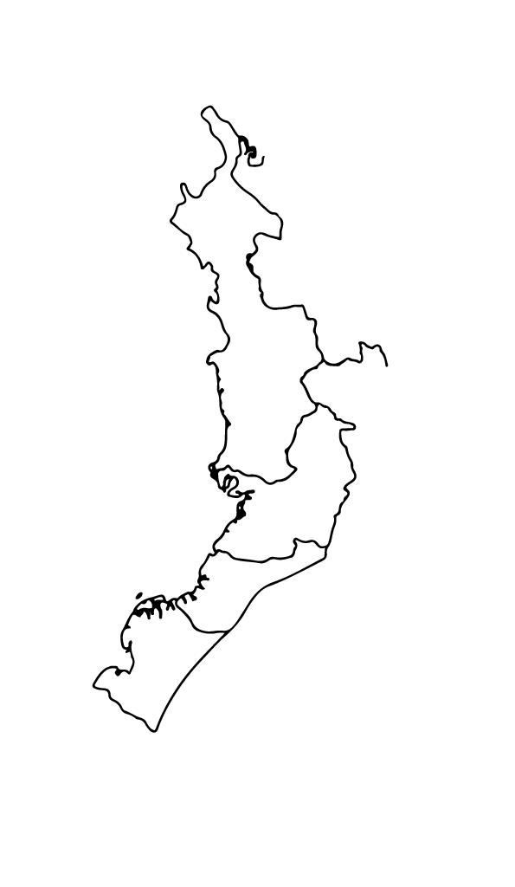

Cicatrices Invisibles
Región Pacífico Colombiano
Hay historias que se transmiten de madres a hijas, y la violencia de género es una de ellas. Este proyecto nace para conectar las cifras que el Estado Colombiano tiene por separado, revelando una realidad clara: cuidar a las niñas hoy es una forma de asegurar el bienestar de las mujeres del mañana.
Explorar el atlas ↓Detrás de los ríos y la selva del Pacífico, hay cicatrices que no dejan de doler. En departamentos como Chocó, Cauca, Nariño y Valle de Cauca, la violencia familiar y sexual apaga la tranquilidad de niñas y mujeres. Esta región concentra algunos de los municipios con mayor vulnerabilidad estructural del país, presencia de grupos armados, alta proporción de población étnica, déficit histórico de presencia estatal y condiciones de pobreza que amplifican los factores de riesgo para la violencia de género.

01
El Territorio
¿Dónde, en la Región Pacífico, la violencia de género golpea más fuerte?
Solemos ver la agresión a niñas y a mujeres como problemas distintos, pero en el territorio son parte de una misma historia. Para llenar ese vacío y medir este ciclo que se hereda, diseñamos el ICV-GEN-F, un índice que une sus realidades para que las instituciones puedan actuar a tiempo.
¿Qué es el ICV-GEN-F?
El Índice Compuesto de Violencia de Género – Femenino (ICV-GEN-F) es una medida que construimos específicamente para este proyecto. Resume en un solo número, entre 0 y 100, qué tan severa es la violencia contra mujeres y niñas en cada municipio de la Región Pacífico.
¿Por qué hace falta un índice nuevo? Porque la violencia de género no es un evento aislado. Es un patrón que se repite a lo largo de la vida de una mujer: empieza en la infancia y persiste en la adultez. Una niña agredida en su hogar hoy es, con frecuencia, la mujer agredida mañana — en el mismo municipio, a veces por el mismo entorno. Lo llamamos continuo multigeneracional.
¿Qué mide exactamente? El índice combina cuatro tasas — los cuatro rostros del continuo — calculadas por cada 100.000 habitantes femeninas:
- Violencia intrafamiliar contra niñas y adolescentes (peso 30%)
- Violencia sexual contra niñas y adolescentes (peso 30%)
- Violencia intrafamiliar contra mujeres adultas (peso 25%)
- Violencia sexual contra mujeres adultas (peso 15%)
El 60% del peso lo lleva la violencia contra niñas y adolescentes. Es una decisión metodológica. La violencia contra menores es la más invisibilizada, y la que marca el resto de la vida. Si el indicador no la jerarquiza, está midiendo otra cosa.
¿Qué no es? No es una predicción. No es una sentencia sobre los municipios. Es una foto: una manera transparente de comparar dónde el patrón es más severo, para que la política pública pueda priorizar.
Para calcular el ICV-GEN-F, analizamos datos de datos.gov.co sobre reportes de violencia intrafamiliar y delitos sexuales de la Policía Nacional desde 2018 hasta 2025 para la región.
Municipios de la Región Pacífico
ICV-GEN-F por municipio y clasificados en dos grupos de severidad Alta y Moderada/baja
La Paradoja del Litoral Pacifico: ¿Por qué Chocó y la Costa se ven "Moderados"?
Chocó profundo (medio y bajo San Juan, la costa pacífica chocoana) y las zonas costeras de Cauca y Nariño aparecen clasificados en el grupo de Moderada/Baja.
En el Pacífico rural, una mujer debe superar barreras para poder hacer un reporte de violencia contra ella, barreras geográficas y económicas. En gran parte del Chocó y el Pacífico rural, los grupos armados ilegales ejercen el control social y territorial, acudir a la Policía a denunciar violencia intrafamiliar o sexual es visto por estos grupos como una "traición" o como llevar al Estado al territorio, y tambien la desertificación institucional.

Y como se ve el índice a través de los años en las región pacifico?
A pesar de las pequeñas variaciones año a año, el nivel base de la violencia sigue siendo constante, no vemos una tendencia clara de descenso. La violencia persiste a través de los años.
Pero, ¿por qué solo hablamos de mujeres?
02
La fractura de género
¿Es realmente esto un problema de género, o es una violencia que afecta a todos por igual?
Anatomía de la brecha
Geografía de la inequidad
El giro analítico
Correlación ICV-GEN-F ↔ brecha
Pero hablar de violencia de género, es decir poco, ahora veamos los dos tipos de violencia
03
Dos violencias, y la mitad ocurre en la infancia
¿Qué tipos de violencia coexisten en estos municipios, y cuál es la más grave?
Municipos como Policarpa, Nariño presenta una coexistencia alta de los dos tipos de violencia; municipios como Caloto, Cauca predomina la violencia intrafamiliar, mientras que en Argelia, Cauca, predomina la Violencia Sexual. En el bajo perfil declarado, están la mayoría de los municipios rurales y fluviales de los que hablábamos antes (gran parte del Chocó), no es que no haya violencia, es que el Estado no se ha enterado.
La violencia sexual aumenta más en las niñas y adolescentes; la violencia intrafamiliar, en mujeres adultas.
Puede existir un subregistro de violencia sexual en mujeres adultas, ya que es una de las deudas más dolorosas del sistema de justicia (revictimización institucional, entre otros factores). Que los datos de la Policía nos muestren más Violencia Intrafamiliar (VIF) que Violencia Sexual no significa que la segunda ocurra menos; significa que la VIF es más "visible" y, socialmente, un poco menos castigada al denunciar. La violencia sexual toca las fibras más íntimas, tabúes y vergonzosas de la sociedad, lo que levanta un muro de silencio casi impenetrable para una mujer adulta.
Taxonomía del delito sexual
El nacimiento de una cicatriz invisible
De cada dos denuncias que entran por violación o abuso sexual, una es de una niña.
Más de la mitad de las víctimas de violencia sexual en todo el Pacífico son niñas que aún no han cumplido los 14 años. No estamos hablando de adultas en una discoteca o de situaciones complejas de la calle; estamos hablando de la infancia truncada.
Cuando esa niña cumple 18 años, el abuso quizás para, pero la herida se queda por dentro. Esa niña crece con el miedo metido en los huesos, creyendo que su cuerpo no le pertenece y que la violencia es el único idioma que existe
Sabemos dónde, contra quién, qué tipo de violencia. Y ahora: ¿Cómo ocurre? ¿Quien agrede?
04
La anatomía forense
¿Cómo ocurre la violencia? ¿Quién la comete, dónde, cuándo y por qué?
Universo de casos peritados
El agresor
¿Quién la comete?
El agresor cambia con la edad de la víctima. En la violencia sexual, en la primera infancia es el cuidador; en la adolescencia, el padrastro; en la adultez, la pareja o expareja. La violencia no cambia: cambia quién la ejerce.
En la violencia intrafamiliar, a la mujer del Pacífico primero la violenta el padre o el padrastro, luego la golpea el hermano, después abusa de ella la pareja y, al final de sus días, la maltrata el hijo. Es una cultura donde los hombres de la familia se van pasando la antorcha del maltrato de generación en generación.
De acuerdo con los registros de Medicina Legal, «otros familiares» en VIF corresponde a la pareja. De acuerdo con los datos, parece que las parejas no generan violencia porque casi no aparecen. Pero se trata de un posible subregistro en los casos que llegan hasta peritaje: el compañero es el fantasma del mapa; no aparece porque es a quien más miedo se le tiene. Denunciar al hombre con el que duermes y que trae la comida es firmar una sentencia de más violencia. El silencio de las mujeres adultas es, en realidad, una estrategia para sobrevivir.
El hogar como escenario
¿Cuándo y Dónde?
En la región Pacífico, la VIF sucede con más frecuencia los días domingo, cuando la familia está reunida; la violencia sexual ocurre más frecuentemente en días de semana, destacándose el día martes, y octubre como el mes con más abusos.
El hogar y el entorno cercano son las zonas de mayor peligro para las mujeres del Pacífico colombiano.
Nota aclaratoria: El departamento del Chocó cuenta con muy pocos registros oficiales debido a que el acceso a Medicina Legal es sumamente limitado. La presencia de las instituciones del Estado en este territorio es fragmentada, centralizada y precaria. En consecuencia, este bajo volumen de datos no refleja la ausencia de violencia, sino un subregistro estructural provocado por el abandono institucional que condena a las víctimas al silencio.
El factor y la circunstancia
¿Porqué?
Interseccionalidad
05
Tu municipio
¿Y aquí, en mi municipio, qué pasa?
Consulta la ficha de cada municipio de la Región Pacífico y, al final, la recomendación del modelo de prevención para el territorio.
Acerca de este proyecto
«Cicatrices Invisibles» nace para conectar las cifras que el Estado colombiano mantiene por separado y hacer visible un ciclo de violencia que se hereda de niñas a mujeres en la Región Pacífico Colombiano. Este proyecto surge de la urgencia ética y metodológica de comprender que las violencias basadas en género no son eventos aislados, sino un continuo multigeneracional: un patrón sistemático que empieza en la infancia profunda y persiste hasta la vejez. Una niña agredida en su hogar hoy es, con frecuencia, la mujer vulnerada mañana, muchas veces en el mismo municipio y por su propio entorno.
Para medir esta realidad, creamos el Índice Compuesto de Violencia de Género Femenino (ICV-GEN-F). Este indicador resume en un solo número (de 0 a 100) qué tan severa es la violencia intrafamiliar y sexual en cada uno de los 179 municipios analizados.
¿A quién beneficia? De forma directa, a Comisarías de Familia, ICBF Regional Pacífico, las Gobernaciones de Valle del Cauca, Cauca, Nariño y Chocó, y los equipos de política pública de género de las alcaldías. De forma indirecta, a las niñas, adolescentes y mujeres de los municipios críticos, cuyo riesgo hoy es invisible en los sistemas oficiales de información.
Datos
- Reporte Delito Violencia Intrafamiliar Policía Nacional
- Reporte Delitos sexuales Policía Nacional
- Violencia intrafamiliar. Colombia, años 2015 a 2024. Cifras definitivas Medicina Legal
- Exámenes médico legales por presunto delito sexual. Colombia, años 2015 a 2024. Cifras definitivas